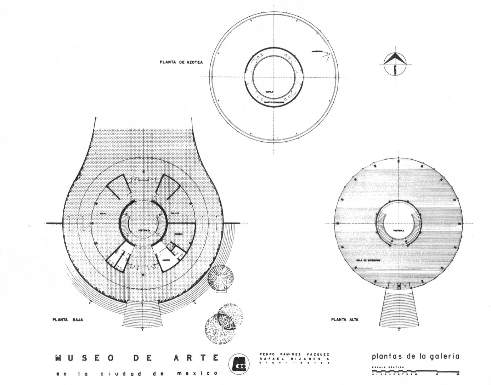

NUESTRA HISTORIA
El Museo de Arte Moderno (MAM) es un recinto cultural dedicado principalmente a preservar, estudiar y difundir el arte mexicano producido a partir de la década de 1930. Su sede, ubicada en Paseo de la Reforma, dentro del Bosque de Chapultepec de la Ciudad de México, México, fue inaugurada el 20 de septiembre de 1964, y construida a iniciativa del entonces presidente Adolfo López Mateos, responsable de gran parte de la infraestructura cultural del centro del país. El edificio del Museo de Arte Moderno de México se basó en un diseño de los arquitectos Pedro Ramírez Vázquez y Carlos A. Cazares Salcido (Catedrático en la Universidad de Sonora), en colaboración con Rafael Mijares Alcérreca. Una parte del proyecto original, el cual incluía auditorio, biblioteca y bodegas, nunca fue completada. El diseño de las jardineras y los andadores corresponde a Juan Siles, durante la dirección de la artista Helen Escobedo.
Su gestión busca rebasar la idea del museo como vitrina patrimonial y reforzar su percepción como un centro cultural promotor de experiencias y servicios culturales. Ello, a través de narrativas museológicas actuales y de un activo programa público interdisciplinario. El MAM intenta hacer énfasis en perfeccionar y diversificar la infraestructura de servicios, así como contemporaneizar el diseño y la perspectiva de las exposiciones y los programas paralelos, siempre acorde al mandato y a la misión del MAM. Dentro de su exhibición permanente se encuentran obras de varios grandes maestros mexicanos del periodo, tales como: Frida Kahlo, Julio Castellanos, David Alfaro Siqueiros, Emir Jair, Roberto Montenegro, José Clemente Orozco, Louis Henri Jean Charlot, Juan Soriano, Juan O'Gorman, Diego Rivera, Jesús Guerrero Galván, María Izquierdo, Rufino Tamayo entre muchos más
ARQUITECTURA
El Museo de Arte Moderno tiene el compromiso de ser un espacio público que ofrece a sus visitantes una experiencia individual y trascendente. Su gestión busca rebasar la idea del museo como vitrina patrimonial y reforzar su percepción como un centro cultural promotor de experiencias y servicios culturales. Ello, a través de narrativas museológicas actuales y de un activo programa público interdisciplinario. El MAM intenta hacer énfasis en perfeccionar y diversificar la infraestructura de servicios, así como contemporaneizar el diseño y la perspectiva de las exposiciones y los programas paralelos, siempre acorde con el mandato y la misión del MAM.
